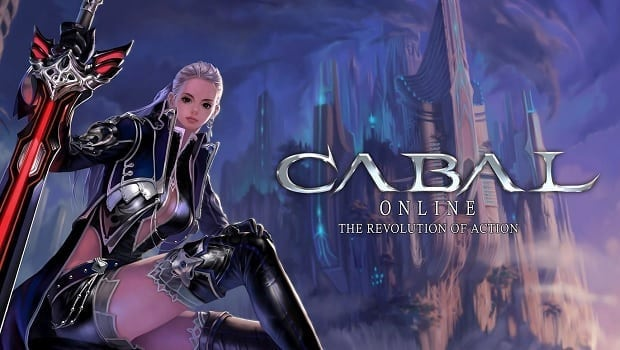
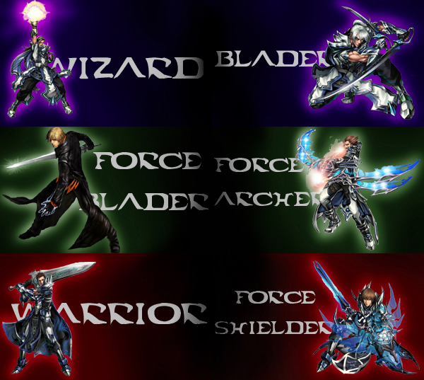
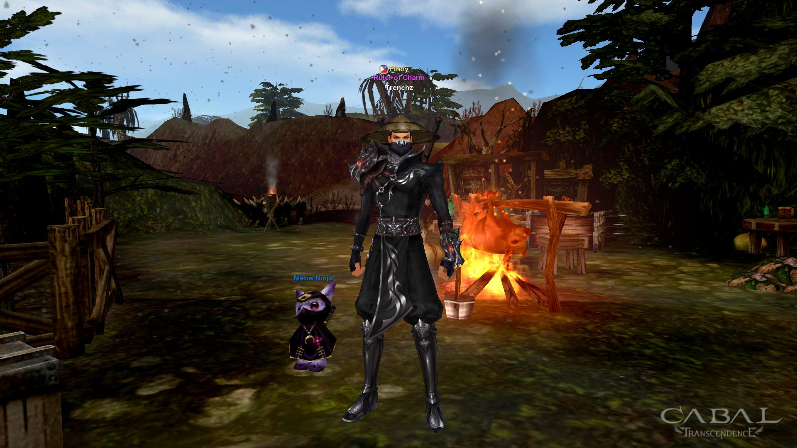
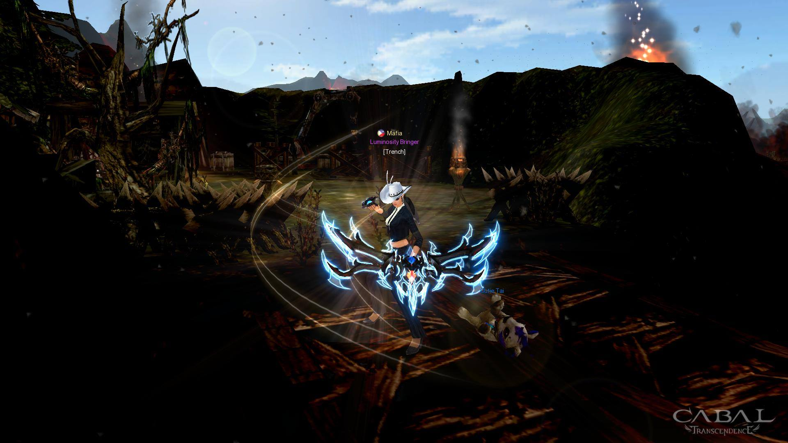

Cabal One

GAME PLAY
Cabal Online, As a typical MMORPG, gameplay in Cabal Online contains elements of both player versus player and player versus environment, as well as player killing. PvE elements include grinding and quests which reward players with items and experience points, as well as instances for obtaining assorted treasure and "Alz", the in-game currency.PvP elements include player-killing in special channels (with penalties for mass killing), arranged duels between two players with no penalties for either side, the Mission War system, which divides players into two nations, Capella and Procyon, as well as a Neutral faction, and has them wage war against each other in Tierra Gloriosa events, specific war channels and all higher-level maps (which are war-enabled at all times), and lastly the Guild versus Guild system, allowing arranged mini-wars between two guilds. Players can band together to form a party, with a maximum of six characters. Bonus experience points are awarded to party members based on their contributions.
This game is full of grind and you need time to play this game to achieve the endless power in the official server but we have some privates server that will make your gameplay 2x fast if you really want to be strong in this game thats why im playing a private server.
ACHIVEMENTS
I dont have any achievemets here like in real life situation but the enjoyment and the experience that you can achieve here is the last item, skills and power if you achieve that you can now dance in the main city could "Blody ICE" and the more fun to this is the MISSION WAR in MWAR you can PK(PLAYER KILL) and being a bringer of the war. And this game is a time killer because you need to grind if you want 24/7 in the game so much better but think you self before the game then here im going to show you my character and costume he have.
But first the game have 6 class:
My main class is: Force Blader
But here is my characters
 The costmetics of this game is really cool and this game is so old nowadays but still its up and i think they are 2 digits years right now?
Im playing in a private server could CABAL ONE its a mid rate server that is like a official server and im in the last set right now and the content of the update right now is finished too but more easier and you dont need to realese a money but you can donate for only money for game or could ALZ but if you want go for it for more easy way to become powerful. This private server that i going to share to you is a active staffs and gm and if you want to play just click the link below enjoy!